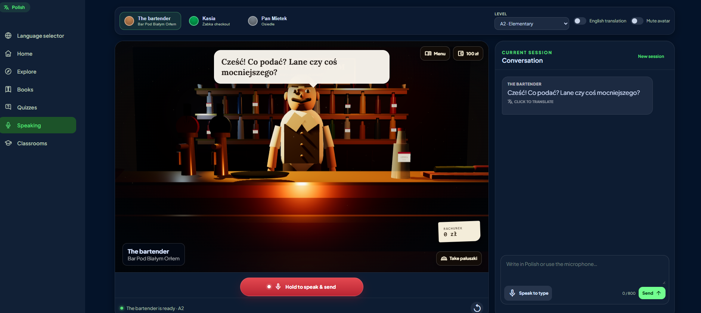
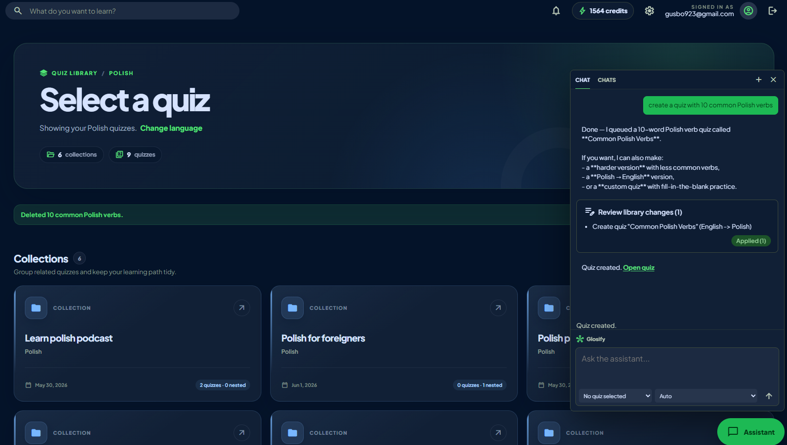
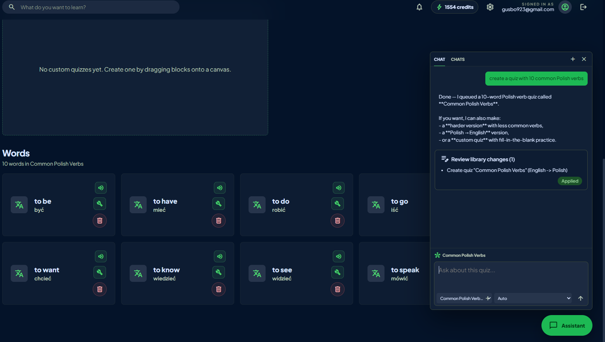
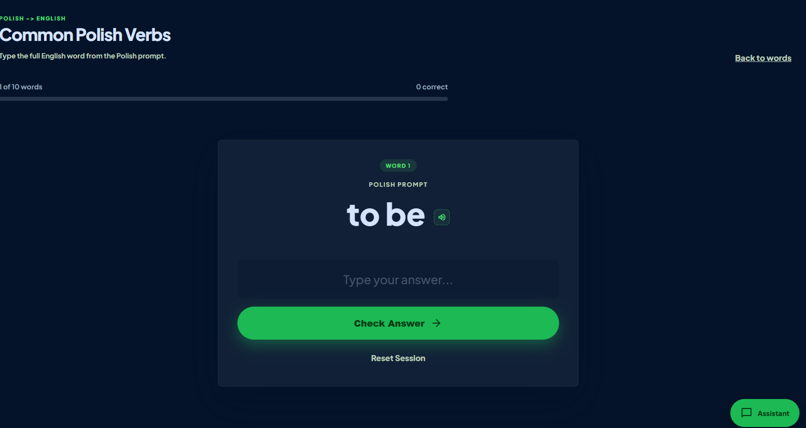
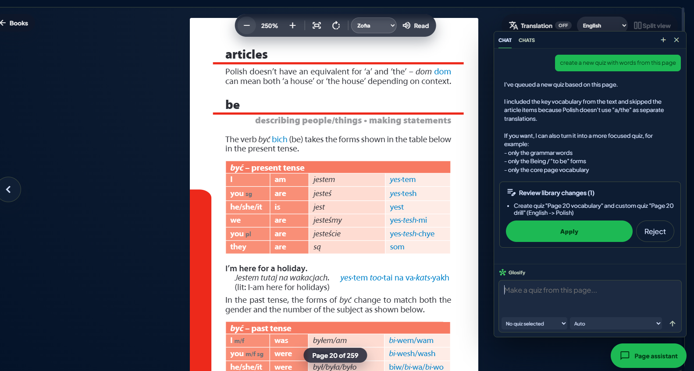

Vocabulary practice
Collections, flashcards, typing exercises, custom quizzes, example sentences, and progress tracking.
My full-stack project
I built Glosify to practise language skills in one place. Users can save vocabulary, take quizzes, read uploaded books, join classrooms, and practise speaking with an AI tutor.
The live app may take up to 30 seconds to start after being idle.

Main features
Collections, flashcards, typing exercises, custom quizzes, example sentences, and progress tracking.
PDF upload, browser-based reading, text extraction, page translation, and vocabulary capture.
Guided conversation scenes using browser speech recognition, generated replies, and structured feedback.
Membership, assignments, shared content, SignalR chat, and Azure Communication Services calling.
Engineering work
Backend: I worked with services, EF Core migrations, authentication, validation, rate limiting, and SQL retry settings.
Cloud: I connected the app to Azure AI Foundry, Speech, Blob Storage, Communication Services, Monitor, and App Service.
Delivery: I set up GitHub Actions to build the app and deploy it to Azure with OpenID Connect.




More about the code
The other pages explain the project folders, architecture, local setup, tests, and deployment.
{kind=link}
{kind=link}
{kind=link}
{kind=link}